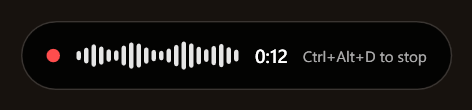
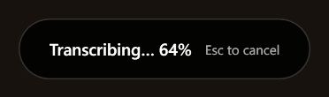
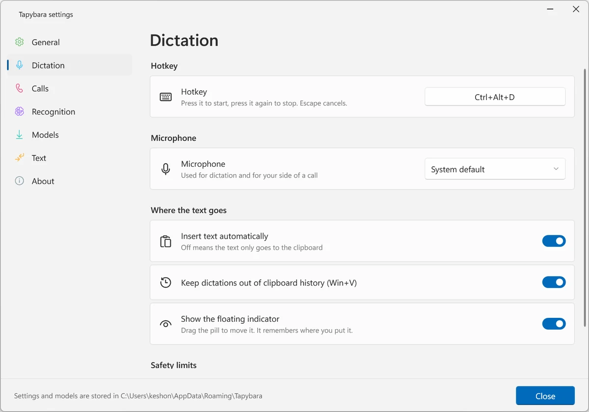
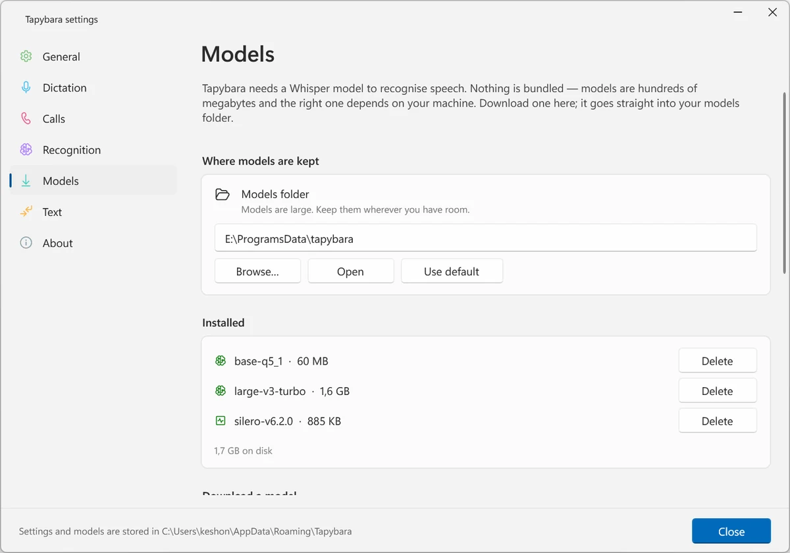
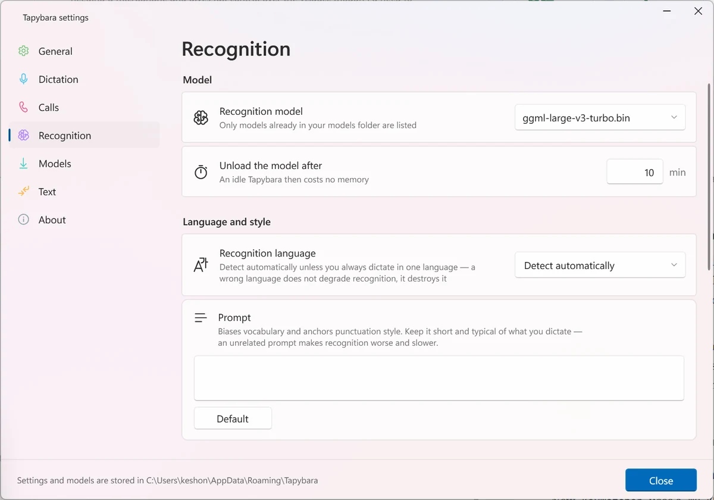

voice dictation · windows · whisper.cpp · open source
Tapybara puts a global hotkey on your keyboard. Press it, speak, press it again, and the text is inserted where your caret already was — in your editor, your browser, your chat window. Whisper runs locally on your own GPU, so the audio is never uploaded and there is no account involved.

the indicator, floating above every window while you talk
how it works
Tapybara lives in the tray. You never switch to it, which is the point: switching away from what you were writing defeats the exercise.
01
The indicator appears above everything, showing your microphone level and elapsed time. Focus does not move, so your caret stays where it was.
02
Pauses become paragraph breaks, since Whisper's timings say where they were. Escape discards the recording — and other applications still receive their Escape while you dictate.
03
The text is inserted, not left on the clipboard for you to paste. Insertion goes through a synthetic paste, which is the path that also works in Electron and Chromium apps.

recognition runs after you stop, not while you speak
why local
Windows has dictation built in. It is cloud-backed, and its quality for languages other than English is mediocre — both of which follow from where the model lives rather than from anything unfixable. Running whisper.cpp yourself moves the work to your own GPU, which makes the recording a local file that is deleted rather than a request to somebody's server.
It also means you choose the model. Language-specific fine-tunes exist and are often markedly better than the general one for their language, and swapping to one is a file in a folder.
The trade is real and worth stating plainly. You download a model once — several hundred megabytes of it — and you need a GPU for this to feel instant. On CPU it runs at roughly the speed you spoke, which is usable for a sentence and tedious for a paragraph.
One 28-second sample, large-v3-turbo, on an RTX 3060.
Measured on one machine, not a benchmark suite — your own numbers are
the ones that matter, and the compute backend actually in use is shown
in the About page.
what you configure
The settings follow the system: same typography, same card layout, same light and dark as everything else on the desktop.



details
Whisper does not mark paragraphs, but its segments carry timestamps and a pause is a fair signal that the speaker moved on. Optional, with a threshold.
Dictations stay pasteable with Ctrl+V but are kept out of the Win+V history.
Cancelling watches the key through a hook rather than claiming it, so dialogs still close and menus still dismiss while a dictation is running.
Recognition mangles product names in predictable ways. Fixing them is a line each, including names carrying punctuation like C# or .NET.
The last ten sit in the tray menu, in case one landed in the wrong window.
An empty portable.txt next to the executable moves settings and models beside it, leaving nothing in the system.
The Vulkan backend ships inside the graphics driver — NVIDIA, AMD or Intel — so there is nothing extra to install.
Following the system language by default. Recognition covers the 99 languages Whisper knows, detected or pinned to one.
quick start
Tapybara.exe. No installer and no .NET needed — the build is self-contained.Large v3 Turbo (q5_0) is a reasonable first pick at about 550 MB. Nothing works until this is done.Or build it:
# Windows, .NET 10 SDK
git clone https://github.com/keshon/tapybara
cd tapybara
build.cmd run
Early development. Dictation works end to end and is used daily. Call recording works but is newer and less exercised. If something breaks, the log sits next to the settings file and the issue tracker is open.
calls
A call is recorded as your microphone and your system audio kept separate. That separation does the job speaker diarisation would: in a conversation between two people, who said what follows from which track it landed on, without any voice comparison.
The two are merged into one chronological transcript.md with
timestamps and names. Speech that leaked from the speakers back into the
microphone is filtered out, and the transcript records how many lines
that removed — an over-eager filter is then visible instead of silent.
Recording captures the other party too. In many places recording someone without telling them is unlawful, and everything audible on the chosen output device is captured — notifications, music, another meeting — not only the call. Tapybara says this once before the first recording rather than starting quietly.
faq
No. Recognition runs locally through whisper.cpp. The only request Tapybara makes is downloading a model when you ask it to, from Hugging Face. There is no telemetry and no server component.
Models are hundreds of megabytes, and which one suits you depends on your hardware and the language you speak. Bundling one would enlarge the download for everybody and still be the wrong choice for many. The Models page fetches it, and resumes where it left off if the connection drops.
Not strictly, but it is the difference between a second and a minute. Any Vulkan-capable GPU works and the runtime ships in the graphics driver. On CPU, transcription runs at roughly real time, which is fine for a sentence and tiring for a long dictation.
Good, not perfect. Names and jargon get mangled in predictable ways, which is what the replacements list is for. On silence Whisper sometimes emits phrases it learned from subtitles — "thanks for watching" and similar — and those are filtered out, deliberately conservatively, so an unusual real sentence is kept rather than an occasional artefact removed.
Text goes in through the clipboard followed by a synthetic Ctrl+V, which works everywhere, including Electron and Chromium apps where accessibility-based insertion is accepted and then silently ignored. If the target window runs as administrator and Tapybara does not, Windows blocks the keystroke; the text is still on the clipboard and Tapybara says so.
Whisper knows 99. Detection is the default, or one can be pinned. Fine-tunes for a specific language often punctuate better than the stock model — put one in the models folder and it appears in the list.
No. MIT licensed, source on GitHub, nothing to sign up for.